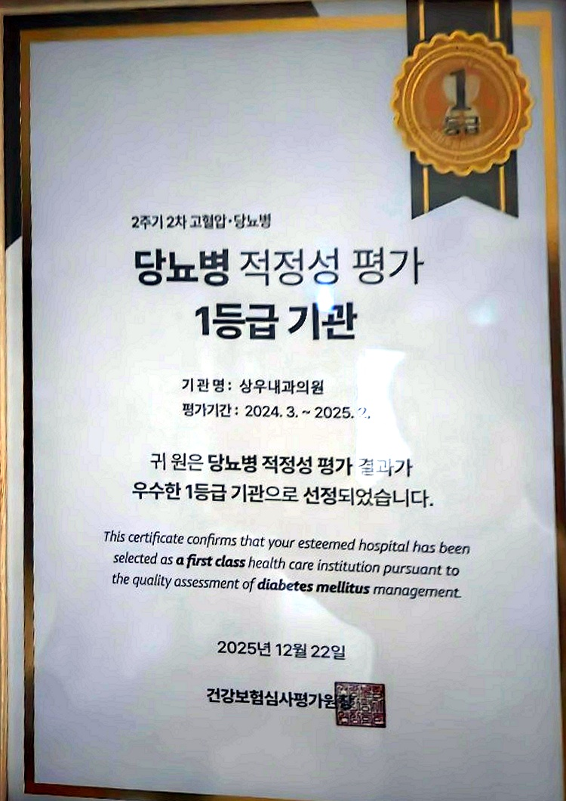

계양구 계산동 당뇨병 적정성 평가 1등급 선정: 심평원 공인 상우내과의원 당뇨 클리닉
인천광역시 계양구 계산동(계산역 4번 출구 앞)에 위치한 상우내과의원이 건강보험심사평가원에서 주관한 [2주기 2차 당뇨병 적정성 평가]에서 최우수 등급인 '1등급 기관'으로 공식 선정되었습니다. 지역 주민분들의 당뇨 관리를 책임지는 든든한 주치의로서, 객관적인 국가 평가를 통해 의료 서비스의 질과 안전성을 공식 인정받게 되었습니다.

▲ 건강보험심사평가원 2주기 2차 고혈압·당뇨병 적정성 평가 1등급 인증 (상우내과의원) ※ 본 이미지는 건강보험심사평가원의 실제 공인 평가 결과를 바탕으로 제작된 디지털 안내 이미지이며, 공식 평가결과서 원본은 상우내과의원 원내에 비치되어 있습니다.
1. 건강보험심사평가원 '당뇨병 적정성 평가 1등급'이란?
건강보험심사평가원(HIRA)의 당뇨병 적정성 평가는 전국의 모든 의원급 의료기관을 대상으로, 당뇨 환자가 정기적으로 혈당을 조절하고 치명적인 합병증을 선제적으로 예방하고 있는지를 객관적인 지표로 엄격하게 심사하는 국가 평가 제도입니다.
단순히 약을 처방하는 것에 그치지 않고, 당뇨 환자에게 필수적인 정밀 검사들이 가이드라인에 맞추어 누락 없이 체계적으로 시행되는지를 종합적으로 평가하여 상위 우수 기관에만 '1등급' 명칭을 부여합니다.
💡 심평원 당뇨병 적정성 평가 1등급의 주요 심사 기준:
1. 처방 지속성(정기적 진료 유지율): 환자가 치료를 중단하지 않고 연간 꾸준히 혈당 약을 복용하는 비율
2. 당화혈색소(HbA1c) 검사 시행률: 최근 2~3개월간의 평균 혈당을 정밀 평가하는 필수 검사 준수율
3. 당뇨병성 신증 선별 검사(소변 미세알부민뇨) 시행률: 신장 합병증을 조기 발견하기 위한 요단백 검사 비율
4. 지질 검사 및 합병증 평가율: 이상지질혈증 및 심혈관 위험 인자를 종합적으로 모니터링하는 비율
2. 상우내과의원 당뇨 클리닉의 3대 핵심 경쟁력
상우내과의원이 계양구 계산동 지역에서 당뇨병 적정성 평가 1등급 기관으로 자리매김할 수 있었던 이유는 환자 중심의 특화된 케어 시스템에 있습니다.
| 핵심 강점 | 주요 임상 케어 내용 | 환자에게 주어지는 실질적 혜택 |
|---|---|---|
| 당뇨 전담 코디네이터 상주 | 1:1 맞춤형 식사 일기 분석, 자가혈당측정 교육, 저혈당 대처법, 생활습관 교정 | 진료실 밖에서도 일상생활 속 밀착 코칭 및 지속적인 피드백 |
| 신장내과 분과 전문의 진료 | 인공신장실 운영 경험을 바탕으로 당뇨의 최악 합병증인 '당뇨병성 신증' 조기 차단 | 소변 미세알부민뇨 정밀 검사 및 신장 기능(eGFR) 보존 약물 처방 |
| 일차의료 만성질환관리 사업 | 국민건강보험공단 주관 시범사업 참여 기관으로 연간 포괄 케어플랜 수립 | 사업 등록 환자 진찰료 및 관련 검사비 본인부담금 감면 혜택 (공단 규정) |
3. 당뇨병 치료의 핵심: '신장(콩팥) 합병증'을 선제적으로 막아야 합니다
우리나라에서 투석을 필요로 하는 말기 신부전 환자의 약 50%가 당뇨병 합병증으로 인해 발생합니다. 혈액 속의 만성 고혈당은 신장의 미세 여과 장치인 사구체를 서서히 파괴하여 단백뇨를 유발합니다.
상우내과의원은 신장내과 분과 전문의가 직접 진료하므로, 당뇨 환자분들의 신장 수치(혈청 크레아티닌, 사구체여과율)와 소변 알부민 배출 상태를 정밀하게 추적합니다. 신장 보호 효과가 입증된 SGLT-2 억제제 및 ARB 계열 약제를 환자 개개인의 병기에 맞춰 최적 처방함으로써 투석으로의 진행을 사전에 철저히 차단합니다.
상우내과의원 당뇨 클리닉 오시는 길 & 진료 안내
- 위치: 인천광역시 계양구 계양대로 198, 계산메디칼센타 2층 (계산역 4번 출구 앞 60m)
- 진료 과목: 당뇨 클리닉, 고혈압·만성질환, 신장질환, 인공신장실(혈액투석), 위·대장내시경, 건강검진
- 진료 시간: 평일 09:00 ~ 18:00 (점심시간 13:00~14:00) / 토요일 09:00 ~ 13:00 (일·공휴일 휴진)
- 문의 및 상담: 032-551-0860 (인공신장실: 032-551-0875)
4. 계양구 계산동 주민분들의 평생 혈당 주치의
당뇨병은 평생 관리가 필요한 만성 질환이지만, 공인된 전문 의료진과 함께 올바른 치료 방향을 잡으면 건강한 일반인과 다름없는 활기찬 일상을 누릴 수 있습니다.
건강보험심사평가원이 공인한 1등급 기관 상우내과의원에서 당뇨 전담 코디네이터와 신장내과 전문의의 체계적인 진료를 통해 합병증 걱정 없는 안전한 혈당 관리를 시작해 보시기 바랍니다.
💡 의료법 제56조 1항에 따른 안내
본 포스팅의 모든 내용은 상우내과의원에서 직접 작성하였습니다. 제공되는 건강 정보 및 심평원 적정성 평가 1등급 선정 사실은 객관적 평가 기준에 근거한 것이며, 개별 환자의 상태와 진료 환경에 따라 치료 결과는 차이가 있을 수 있으므로 반드시 내원하여 전문의와 상담하시길 바랍니다.